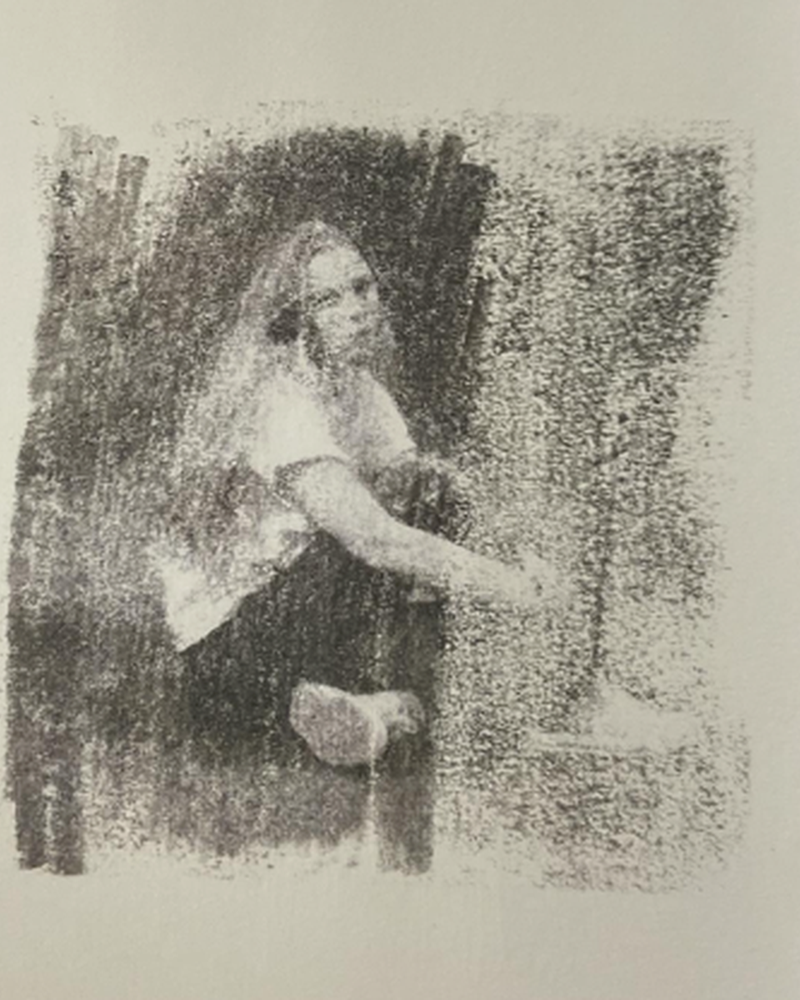

About
Sophie Modigliani-McGrane is a New York-based multidisciplinary designer currently pursuing an MFA in Communication Design at Pratt Institute. With a background in studio art and art history from Oberlin College, her practice moves between visual identity, editorial systems, digital environments, and research-led projects. Rooted in observation and storytelling, the work often bridges creative technology, publishing, and hands-on material exploration.
